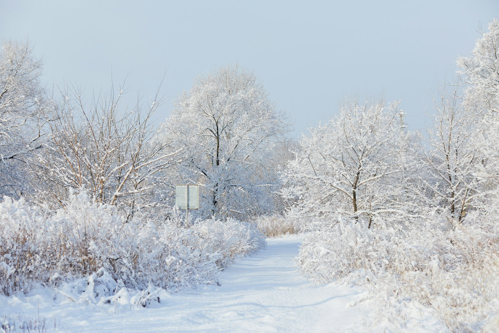

现象历年规律东北
吉林雾凇岛
Jilin Rime Island · 吉林 · 吉林市
最佳时间
12 月 – 次年 2 月；严寒清晨最佳
需 -20°C 以下+无风+江水不冻的组合，雾凇出现晨晚消散。
忽如一夜春风来：松花江水汽在寒夜凝成树挂，千树万树一夜梨花。
不能错过
- 韩屯村渡口清晨 6–8 点是雾凇最厚时段
- 日出后 1–2 小时即开始脱落，赶早
旅人提醒
- -25°C 手机秒关机，暖宝宝贴设备
- 徒步栈道冰面极滑，冰爪必备
月度热力与气温
-8°
1
-4°
2
3°
3
15°
4
22°
5
27°
6
29°
7
27°
8
21°
9
12°
10
1°
11
-7°
12
适宜度（柱高，5=最佳）依据活动窗口与气候整理；气温为月均高温近似值（°C），仅供规划参考，出行前请查当地预报。
编辑核实笔记 · 整理自吉林市公开资料，非亲历；雾凇以当日预报为准。
预订 / 官网
官方页面：查看官网 / 官方信息 ↗ · 票价与预约以官网为准
联盟链接含占位 tracking id（Booking/Klook/Trip.com），上线替换为真实 ID 即生效；均带 utm 参数与点击统计。